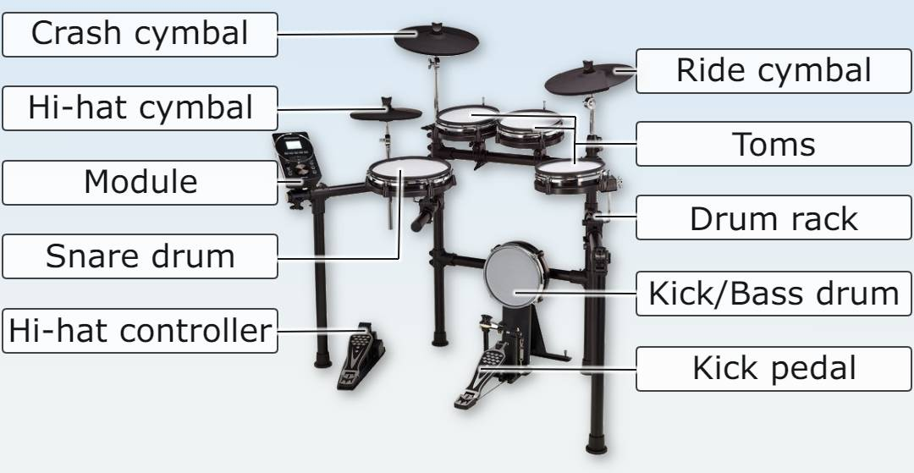

From a materials standpoint, piezoelectrics are not the only interesting thing in commercial drumkits. These use different materials on each pad to better simulate the experience of playing on an acoustic drum set.
It is the main drum, it provides a characteristic more strident and metallic tone. Drumheads are usually made of rubber or mesh. If the head is made of mesh, the rebound and sensitivity are higher, as well as the noise level is lower. With rubber heads, the hitting feel is less realistic. A sensible snare pad needs to be able to adjust the tension of the head and have the ability to deliver a rim shot. The hoop usually incorporates its own trigger and has its own distinct sound.
The tom is a drum very similar to the snare, but with a lower sound and much less resonance. Most beginner kits already offer toms with mesh heads. In the same way as on the snare, you can customize the rebound of the tom by tightening or loosening the screws on the rim, just as you do with acoustic drums, using the tuning key.
Metal cymbals generate a large amount of sound, their size directly influences the sound, the larger or thicker the greater the acoustic power. However, electronics achieve enormous noise reduction, and another advantage is the variety of sounds they are capable of producing. The cymbals are made of rubber, since it is a material that imitates the touch quite well and does not produce too much noise.
They realistically reproduce the characteristic oscillating movement of metal cymbals. They can incorporate one, two or three hitting zones (arch / edge / bell). Many already incorporate the stop function , that is to say that we can silence them with our hand in the same way that we would do it with an acoustic cymbal.
The bass drum is controlled with the foot through a pedal with a mallet, it has the deepest and most powerful voice of the entire group. The striking surface (or kick pad) is usually a rubber block with a coating that has been made of a padded or mesh material to provide a high degree of sound absorption.
It is basically made up of aluminum or steel tubes, they come equipped with all the supports, handles and clamps necessary to install the different elements of the kit. It is capable of isolating vibrations between pads.